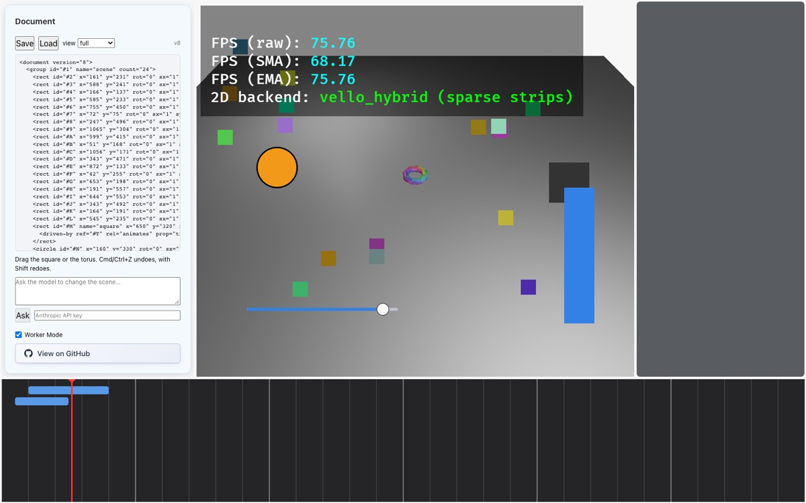

Part 6 of 7 · Scripted time
Scripted time: clips on a timeline
Step 6's exit criterion: scrubbing the timeline plays the clip, and the “why is this moving?” query on the torus answers with the clip. The interesting part isn't the interpolation, which is simple arithmetic. It's where animation lives in the document, and how it slots into the reactive graph from Part 5 without a new mechanism.
ValueKind::Any) and Part 5 (the four read layers, invalidate, changes).src/iron_document/src/time.rs (uncommitted), the time half of lib.rs, graph.rs's set_animated, src/bevy_app/timeline.rs, view.rs, and tests/time.rs.6.1Where does an animation live?
On the property. Give the slot keyframes: transform3d.rot = Animated { keys: [...] }. This is what Slot::Animated was reserved for in step 1. It's easy to sample. But the animation isn't a thing: you can't select it, retime it on a timeline, or ask “what is animating the torus?” without scanning every slot of every node.
In Bevy. Use Bevy's animation system, or the old TimelineState-driven demo code. The animation then lives outside the document: it isn't saved, the model can't see it, undo can't touch it.
Vision doc 05 §3 argues that a clip's target is a projection of an edge. So:
- A clip is a node (type
clip, child of atimeline) with two components:Timing { start, dur, easing }andClip { prop, from, to }. - Its target is a relation:
clip ─animates→ torus, stored in the relations table and indexed by target, so “what drives the torus?” is one lookup. - Sampling produces a layer. For the current playhead,
time::samplecomputes the value of every animated leaf, and those values sit in the reactive graph's animated layer (layer 3 of the four in Part 5). The authored constant is untouched, and bindings that read an animated leaf follow it.
So Slot::Animated stays reserved. “Animated” is a fact about relations, not a kind of slot. The plan records this decision in §5.11.
6.2The data
/// Scripted time (doc 05 §2): a start and a duration on a track.
Timing / "timing" => Timing {
start: Number = Value::Number(0.0),
dur: Number = Value::Number(1.0),
easing: Enum = Value::Enum("linear".to_owned()),
}
/// What a clip does to its target. Endpoints stay literal (doc 05 §2.1)
/// and take the target leaf's kind. The target itself is a relation, not
/// a field (doc 05 §3).
Clip / "clip" => Clip {
prop: Str = Value::Str(String::new()),
from: Any = Value::Number(0.0),
to: Any = Value::Number(1.0),
}prop is a leaf path written as a string ("transform3d.rot"). from and to are declared Any, because their kind is whatever the target leaf's kind is: a Vec3 for the torus's rotation, a Number for the square's x. The registry makes timeline a node that admits only clip children (registry.rs:112). The demo scene builds a timeline with two clips and links them:
let spin = next();
ops.push(clip(spin, "spin", 1.0, 3.0, "ease_in_out", "transform3d.rot", Value::Vec3([0.0, 0.0, 0.0]), Value::Vec3([0.0, std::f64::consts::TAU, 0.0])));
let slide = next();
ops.push(clip(slide, "slide", 0.5, 2.0, "linear", "transform2d.x", Value::Number(500.0), Value::Number(700.0)));
ops.push(Op::Link { rel: Relation { id: rel_ids[0], from: spin, to: torus, rel: RelKind::Animates, data: BTreeMap::new() } });
ops.push(Op::Link { rel: Relation { id: rel_ids[1], from: slide, to: square, rel: RelKind::Animates, data: BTreeMap::new() } });“spin” turns the torus a full revolution about y between 1 s and 4 s with ease-in-out. “slide” moves the square's x from 500 to 700 between 0.5 s and 2.5 s. The Link ops (187–188) are what connect each clip to its target. Neither clip has a field naming the target.
6.3Sampling: one time in, one layer out
time.rs has three functions. The two small ones are the maths:
pub fn ease(name: &str, u: f64) -> f64 {
let u = u.clamp(0.0, 1.0);
match name {
"ease_in" => u * u,
"ease_out" => 1.0 - (1.0 - u) * (1.0 - u),
"ease_in_out" => {
if u < 0.5 {
2.0 * u * u
} else {
1.0 - (-2.0 * u + 2.0).powi(2) / 2.0
}
}
_ => u,
}
}
/// Interpolate two values of one kind. Discrete kinds step at the end.
pub fn lerp(from: &Value, to: &Value, u: f64) -> Option<Value> {
use Value::*;
let l = |a: f64, b: f64| a + (b - a) * u;
Some(match (from, to) {
(Number(a), Number(b)) => Number(l(*a, *b)),
(Vec2(a), Vec2(b)) => Vec2([l(a[0], b[0]), l(a[1], b[1])]),
(Vec3(a), Vec3(b)) => Vec3([l(a[0], b[0]), l(a[1], b[1]), l(a[2], b[2])]),
(Color(a), Color(b)) => Color([
l(a[0] as f64, b[0] as f64) as f32,
l(a[1] as f64, b[1] as f64) as f32,
l(a[2] as f64, b[2] as f64) as f32,
l(a[3] as f64, b[3] as f64) as f32,
]),
(a, b) if a.kind() == b.kind() => {
if u < 1.0 {
a.clone()
} else {
b.clone()
}
}
_ => return None,
})
}ease reshapes progress u (0 to 1) with a named curve. lerp interpolates between two values of the same kind: numbers, vectors and colours smoothly, and anything else (a bool, a string) by stepping to to at the end. Mismatched kinds return None. The third function does the work:
pub fn sample(doc: &Document, t: f64) -> Sample {
let mut out = Sample::default();
let Some(clip_ty) = TypeId::lookup("clip") else { return out };
for clip_id in doc.nodes_of_type(clip_ty) {
let (Some(timing), Some(clip)) = (doc.get::<Timing>(clip_id), doc.get::<Clip>(clip_id)) else {
continue;
};
let num = |s: &crate::value::Slot, d: f64| s.constant().and_then(|v| v.as_f64()).unwrap_or(d);
let start = num(&timing.start, 0.0);
let dur = num(&timing.dur, 0.0);
let easing = timing.easing.constant().and_then(|v| v.as_str()).unwrap_or("linear").to_owned();
let prop = clip.prop.constant().and_then(|v| v.as_str()).unwrap_or("");
let path: LeafPath = match prop.parse() {
Ok(p) => p,
Err(e) => {
out.errors.insert(clip_id, format!("prop {prop:?}: {e}"));
continue;
}
};
let (Some(from), Some(to)) = (clip.from.constant(), clip.to.constant()) else {
out.errors.insert(clip_id, "from/to must be constants".into());
continue;
};
for rel in doc.relations_from(clip_id).filter(|r| r.rel == RelKind::Animates) {
if !doc.is_live(rel.to) {
continue;
}
let offset = rel.data.get("offset").and_then(|v| v.as_f64()).unwrap_or(0.0);
let s = start + offset;
if t < s {
continue;
}
let u = if dur <= 0.0 { 1.0 } else { ((t - s) / dur).min(1.0) };
let leaf = Leaf { node: rel.to, path };
match doc.leaf(rel.to, path) {
None => {
out.errors.insert(clip_id, format!("{} has no {}", rel.to, path));
continue;
}
Some(slot) if slot.expr().is_some() => {
out.errors.insert(clip_id, format!("{leaf} is bound; a clip cannot also drive it"));
continue;
}
Some(slot) => {
let kind = slot.constant().map(|v| v.kind());
if from.kind() != to.kind() || Some(from.kind()) != kind {
out.errors.insert(
clip_id,
format!(
"from/to are {}/{}, but {leaf} is {}",
from.kind().name(),
to.kind().name(),
kind.map(|k| k.name()).unwrap_or("?")
),
);
continue;
}
}
}
if let Some(v) = lerp(from, to, ease(&easing, u)) {
out.values.insert(leaf, v);
}
}
}
out
}For every clip node, and for every animates relation leaving it (line 94):
- Offset and start. Each relation may carry
data.offsetto stagger targets (98). Before the clip starts, the target is skipped (100–102), so it shows its authored value. - Progress.
uis the fraction of the duration elapsed, capped at 1 (103). After the clip ends it holdsto. - Conflicts are reported, not resolved. A target leaf that doesn't exist, a target that is bound (110–113: the binding would win and the clip could never show), or endpoints of the wrong kind (116–127) each put an error in
out.errorsunder the clip's id. The timeline draws that clip red. - Value. Ease, interpolate, and record the result for that leaf (130–132).
A worked example from the slider scene: clip #6 runs from 0.5 s for 2 s, 500 → 700, linear.
store.set_time(1.5) // the playhead moved to 1.5 s
store.drain_changes() →
#4.transform2d.x = 600 // clip #6: start 0.5, dur 2, 500 → 700, linear
// u = (1.5 − 0.5) / 2 = 0.5 → 500 + 200 × 0.56.4The playhead lives in the store, but isn't saved
pub fn time(&self) -> f64 {
self.time
}
/// Move the playhead. Every clip is resampled; leaves whose animated
/// value moved are reported like any other resolved change.
pub fn set_time(&mut self, t: f64) {
self.time = t;
self.resample();
}
/// Clips that could not be sampled at the current time, by clip node.
pub fn time_errors(&self) -> &std::collections::BTreeMap<NodeId, String> {
&self.time_errors
}
fn resample(&mut self) {
let sample = time::sample(&self.doc, self.time);
self.time_errors = sample.errors;
self.reactive.set_animated(&self.doc, sample.values);
}Store has a time: f64 field and a time_errors map (lib.rs:100–102). Neither is part of the Document, so neither is saved or undone. The playhead is editor state, like a scroll position. set_time resamples, and resample passes the sample to the graph:
/// Replace the animated layer with a fresh sample; leaves whose value
/// moved are reported and their dependents re-evaluated.
pub fn set_animated(&mut self, doc: &Document, sample: BTreeMap<Leaf, Value>) {
let mut changed: Vec<Leaf> = Vec::new();
for (leaf, v) in &sample {
if self.animated.get(leaf) != Some(v) {
changed.push(*leaf);
}
}
for leaf in self.animated.keys() {
if !sample.contains_key(leaf) {
changed.push(*leaf);
}
}
if changed.is_empty() {
return;
}
self.animated = sample;
for &l in &changed {
// Only visible when no gesture is previewing this leaf.
if !self.overlay.contains_key(&l)
&& let Some(v) = self.read(doc, l)
{
self.changes.insert(l, v);
}
}
self.invalidate(doc, changed);
}It compares the new sample with the old one and collects the leaves whose animated value moved, appeared or disappeared (73–82). If nothing moved it returns early, so scrubbing through a stretch with no active clips costs almost nothing. For each moved leaf it records a change, which is how the reconciler finds out, unless a gesture is currently previewing that leaf (89). Then invalidate (95) re-evaluates any binding that reads an animated leaf. That is how Part 5's machinery gives “a bar bound to an animated value follows the animation” for free.
The sample is also refreshed after every transaction (in after_transaction, Part 5), because editing a clip's timing, linking a new target or deleting a node all change what the sample should be. The comment there admits this is unconditional: “cheap enough… clips are few”.
6.5The timeline panel
TimelineState survived the change, as the plan intended, but its role narrowed to the editor-local playhead plus zoom and duration. The clips themselves now come from the document. Three systems matter:
impl Plugin for TimelinePlugin {
fn build(&self, app: &mut App) {
app.init_resource::<TimelineState>()
.add_systems(Startup, setup_timeline_scenes)
// The playhead is a runtime source of the store: pushed before the
// document sync so clip samples land in the same frame.
.add_systems(PreUpdate, (scrub_timeline, push_time_to_store.after(scrub_timeline)).before(sync_document))
.add_systems(Update, (update_timeline_view, render_timeline_grid));
}
}Scrubbing and pushing the time are ordered .before(sync_document), so a scrub's new sample is reconciled in the same frame:
/// Pointer down or drag inside the timeline panel moves the playhead.
pub fn scrub_timeline(
pointer: Res<crate::PointerState>,
panels: Res<Panels>,
mut timeline: ResMut<TimelineState>,
) {
if !pointer.buttons.left {
return;
}
let Some(rect) = panels.rect(TIMELINE_PANEL) else { return };
if !rect.contains(pointer.screen) {
return;
}
let t = ((pointer.screen.x - rect.x) as f64 / rect.w as f64 * timeline.duration).clamp(0.0, timeline.duration);
if (timeline.current_time - t).abs() > 1e-6 {
timeline.current_time = t;
timeline.playing = false;
}
}
/// Mirror the panel's playhead into the store, which resamples every clip.
pub fn push_time_to_store(timeline: Res<TimelineState>, mut store: ResMut<DocumentStore>) {
if (store.0.time() - timeline.current_time).abs() > 1e-9 {
store.0.set_time(timeline.current_time);
}
}Drawing the clip rows reads the document directly, one row per clip node. A row whose clip id appears in store.time_errors() is drawn red:
// One row per clip node, in document order: a bar from start to
// start + dur. Rows are the timeline's own layout, not document data.
if let Ok(mut list) = clips.single_mut() {
let doc = store.0.document();
let clip_ty = TypeId::lookup("clip").expect("registered");
let rows: Vec<(f64, f64, bool)> = doc
.nodes_of_type(clip_ty)
.filter_map(|id| {
let t = doc.get::<Timing>(id)?;
let num = |s: &iron_document::Slot, d: f64| s.constant().and_then(|v| v.as_f64()).unwrap_or(d);
Some((num(&t.start, 0.0), num(&t.dur, 0.0), store.0.time_errors().contains_key(&id)))
})
.collect();
list.rebuild(|b| {
b.clipped(kurbo::Affine::IDENTITY, clip, |b| {
for (i, (start, dur, error)) in rows.iter().enumerate() {
let y = top + ROW_TOP + i as f64 * ROW_HEIGHT;
let x0 = left + start / time_per_pixel;
let x1 = left + (start + dur) / time_per_pixel;
let bar = kurbo::RoundedRect::new(x0, y, x1.max(x0 + 4.0), y + ROW_HEIGHT - 6.0, 4.0);
let color = if *error { [0.85, 0.3, 0.3, 1.0] } else { [0.35, 0.6, 0.9, 1.0] };
b.fill(kurbo::Affine::IDENTITY, peniko::Color::new(color), bar);
}
});
});
}
x=700. The Document panel shows x="650" because the smoke test's earlier drag and redo put 650 there. It is the authored value, and the clip sits on top of it. “spin” (the upper bar) is still turning the torus.The screenshot's panel text says x="650" for the square even though it's drawn at 700, which looks like a contradiction with “views show resolved values”. It isn't. The panel's text is refreshed only on documentChanged, which fires when the version changes (Part 4, 4.4). Scrubbing moves the playhead without creating a transaction, so the panel still shows the text it last fetched. __iron.view(), called after the scrub, does return the animated value; that's what the smoke test's eval line checks. If you want the panel to follow the playhead, it would need a refresh on time changes too.
6.6“Why is this moving?”
Because a target is a relation, the answer is the by_target index: Document::relations_to. The view renders it for any node that something drives:
let kids = doc.children(id);
let rels: Vec<_> = doc.relations_from(id).collect();
// The reverse direction: what drives this node (doc 05 §5.3). Bindings
// already show as `<attr>.bind`; relations arrive from elsewhere.
let drivers: Vec<_> = doc.relations_to(id).collect();for r in drivers {
write!(out, "{indent} <driven-by ref=\"{}\" rel=\"{}\"", r.from, r.rel.name()).expect("string write");
if let Some(prop) = doc.get::<crate::component::Clip>(r.from).and_then(|c| c.prop.constant()).and_then(|v| v.as_str()) {
write!(out, " prop=\"{}\"", escape(prop)).expect("string write");
}
for (k, v) in &r.data {
write!(out, " {k}=\"{}\"", escape(&v.to_string())).expect("string write");
}
out.push_str("/>\n");
}<document version="2">
<group id="#1" count="3">
<slider id="#2" name="level" x="100" y="600" rot="0" sx="1" sy="1" min="0" max="1" step="0.01" value="0.8"/>
<bar id="#3" x="780" y="400" y.bind="640 - #2.slider.value * 300" rot="0" sx="1" sy="1" w="60" h="240" h.bind="#2.slider.value * 300"/>
<rect id="#4" x="600" y="420" rot="0" sx="1" sy="1" w="100" h="100">
<driven-by ref="#6" rel="animates" prop="transform2d.x"/>
</rect>
</group>
<timeline id="#5" count="1">
<clip id="#6" start="0.5" dur="2" easing="linear" prop="transform2d.x" from="500" to="700">
<animates to="#4"/>
</clip>
</timeline>
</document>A person reading the Document panel, or the model reading its view, sees on the rect both the current value and <driven-by ref="#6" prop="transform2d.x"/>. On the clip it sees the forward edge, <animates to="#4"/>. Bindings show as .bind attributes (Part 5), and clips show as <driven-by>, which covers both reasons a value can differ from what was authored.
6.7Dragging something a clip is driving
If you grab the square while “slide” is driving its x, what should happen? Writing a new authored x would change nothing visible, since the clip wins. Silently creating a keyframe would be worse. Vision doc 05 §5.2 says keyframes must never appear silently. So the rule matches bindings: at that moment, the leaf has no handle. interaction_decide_system locks the x axis when reactive().animated() contains it (Part 4), and drag_commit_system refuses to write it and logs why (interaction.rs:234–240). Once the playhead is before the clip's start, the leaf is no longer animated and dragging works again. The plan names a “mode control” (constant / bound / animated per property) as the eventual interface for this.
- Two clips on one leaf: the last one wins, silently.
samplewritesout.values.insert(leaf, v)(time.rs:131) for each clip in id order, so where two overlap, the higher-numbered clip's value replaces the other's with no error. Clip-vs-binding conflicts are reported; clip-vs-clip conflicts aren't. - Some conflicts only show once the clip has started. The start check (line 100) runs before the target checks, so a clip aimed at a bound leaf turns red only once the playhead passes its start. A malformed
proppath is reported at any time, because it's checked earlier (83–89). - The panel's text lags a scrub, as described under the screenshot above.
- A clip is a node with
TimingandClipcomponents. Its target is ananimatesrelation, not a field. time::sample(doc, t)produces the animated layer. It sits beneath gesture previews and bindings and above constants, and is never saved.- The playhead is runtime state in the store, pushed by the timeline panel before each sync.
relations_toanswers “why is this moving?”, and views render it as<driven-by>.